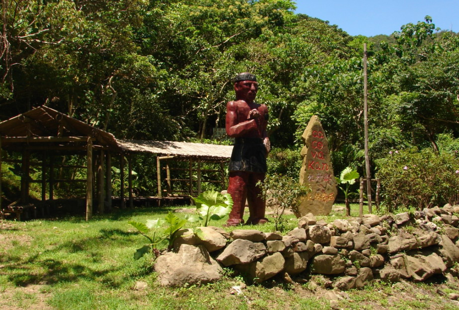

石版屋遺址
位於四林村牡丹原住民抗日戰場紀念碑附近更深處的山林內，掩
蓋於深山荒草與樹木之中，有約50間石板屋聚集而成的部落遺址，因地形變動及
樹根交盤，石板屋已顯得歪曲不整，但仍可分辨的出貴族宅第、民宅和畜棚..等
已有社會組織；遺址內石板屋結構造形特殊，每面牆皆是由一整片巨大石板切製
而成，可見其建造工程之浩大，絶不同於現存原住民的石板屋。遺址內未留任何
文字及圖騰，有別現存原住民文化，也未見對這段歷史存有任何記載，年代無從
查核。據阿公講起自古老就流傳著凡取走這裡一石一板的皆會有不幸的下場，又
為這裡增添許多神秘的色彩。
資訊取自: https://www.pthg.gov.tw/townmdt/cp.aspx?n=C560EE38051591AE
照片取自:牡丹鄉公所